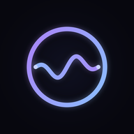

NeuroFlowПолитика конфиденциальности
Обновлено: 21 октября 2026
Коротко
NeuroFlow не собирает, не передаёт и не продаёт никакие данные. Всё, что вы делаете в приложении, остаётся только на вашем устройстве.
Какие данные хранятся
Настройки, язык, привычки, результаты упражнений и история практик сохраняются в локальном хранилище браузера на вашем устройстве. Они никуда не отправляются.
Аккаунты
Регистрации и аккаунтов нет. Мы не знаем, кто вы.
Аналитика и реклама
Нет аналитики, трекеров, рекламы и cookie третьих сторон. Шрифты и звуки загружаются с того же сайта, что и приложение.
Офлайн-кэш
Для работы без интернета приложение сохраняет свои файлы (страницу, шрифты, звуки) в кэше браузера на устройстве.
Удаление данных
Чтобы удалить все данные, очистите данные сайта в настройках браузера или удалите приложение с главного экрана.
Контакты
Вопросы о конфиденциальности: calistenicsflow@gmail.com
Privacy policy
Updated: 21 October 2026
In short
NeuroFlow does not collect, share or sell any data. Everything you do in the app stays on your device only.
What is stored
Settings, language, habits, exercise results and practice history are saved in your browser’s local storage on your device. They are never sent anywhere.
Accounts
There is no sign-up and there are no accounts. We do not know who you are.
Analytics and ads
No analytics, trackers, ads or third-party cookies. Fonts and sounds are loaded from the same site as the app.
Offline cache
To work without internet, the app keeps its own files (page, fonts, sounds) in the browser cache on your device.
Deleting data
To delete all data, clear this site’s data in your browser settings or remove the app from your home screen.
Contact
Privacy questions: calistenicsflow@gmail.com
Datenschutzerklärung
Aktualisiert: 21. Oktober 2026
Kurz gesagt
NeuroFlow erhebt, teilt oder verkauft keine Daten. Alles, was du in der App tust, bleibt ausschließlich auf deinem Gerät.
Was gespeichert wird
Einstellungen, Sprache, Gewohnheiten, Übungsergebnisse und Verlauf werden im lokalen Speicher deines Browsers auf deinem Gerät gespeichert. Sie werden nirgendwohin gesendet.
Konten
Keine Registrierung, keine Konten. Wir wissen nicht, wer du bist.
Analyse und Werbung
Keine Analyse, keine Tracker, keine Werbung, keine Drittanbieter-Cookies. Schriften und Klänge werden von derselben Website wie die App geladen.
Offline-Cache
Damit die App ohne Internet funktioniert, speichert sie ihre eigenen Dateien (Seite, Schriften, Klänge) im Browser-Cache auf deinem Gerät.
Daten löschen
Um alle Daten zu löschen, lösche die Website-Daten in den Browsereinstellungen oder entferne die App vom Startbildschirm.
Kontakt
Fragen zum Datenschutz: calistenicsflow@gmail.com
Política de privacidad
Actualizado: 21 de octubre de 2026
En resumen
NeuroFlow no recopila, comparte ni vende ningún dato. Todo lo que haces en la app se queda solo en tu dispositivo.
Qué se guarda
Ajustes, idioma, hábitos, resultados de ejercicios e historial se guardan en el almacenamiento local del navegador en tu dispositivo. Nunca se envían a ningún sitio.
Cuentas
No hay registro ni cuentas. No sabemos quién eres.
Analítica y anuncios
Sin analítica, rastreadores, anuncios ni cookies de terceros. Las fuentes y los sonidos se cargan desde el mismo sitio que la app.
Caché sin conexión
Para funcionar sin internet, la app guarda sus propios archivos (página, fuentes, sonidos) en la caché del navegador de tu dispositivo.
Borrar datos
Para borrar todos los datos, elimina los datos de este sitio en los ajustes del navegador o quita la app de la pantalla de inicio.
Contacto
Preguntas sobre privacidad: calistenicsflow@gmail.com
隐私政策
更新日期：2026年10月21日
简要说明
NeuroFlow 不收集、不共享、不出售任何数据。你在应用中的一切操作都只保存在你的设备上。
存储的内容
设置、语言、习惯、练习成绩和历史记录保存在你设备上浏览器的本地存储中，绝不会被发送到任何地方。
账户
无需注册，没有账户。我们不知道你是谁。
分析与广告
没有数据分析、跟踪器、广告或第三方 Cookie。字体和声音均从应用所在的同一网站加载。
离线缓存
为了在无网络时使用，应用会把自身文件（页面、字体、声音）保存在你设备的浏览器缓存中。
删除数据
要删除所有数据，请在浏览器设置中清除本网站数据，或从主屏幕移除应用。